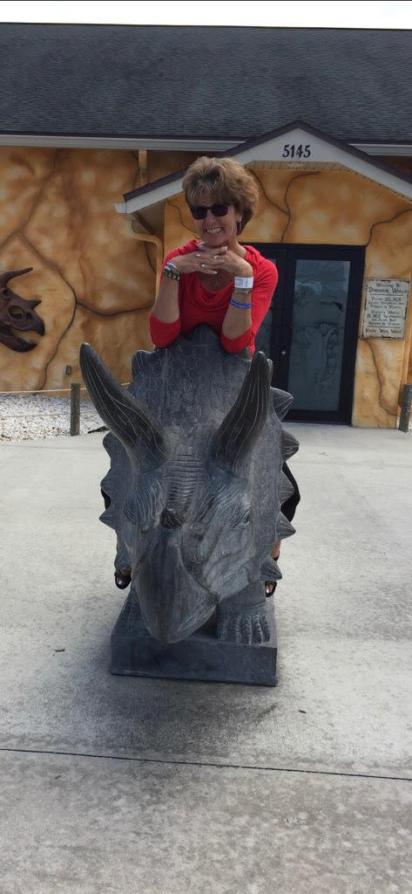

It comes with a heavy heart that the Janice Karkis Believes scholarship was created. She was truly an amazing woman,mother and friend. Her dedication to her students success in and out of the classroom was her passion. We celebrate her life and everyone she came into contact with. The Janice Karkis Belives scholarship is given out to an individual who has great plans to pursue their dreams and make a true difference in the world. Just like Janice did.

Husband
My Wife, My Heart
Perfect Together
You know you've found that special someone, when it's clear after a short time, There's no one else you want to spend your time with...
Janice was the most loved person I've ever known, Never will I know, a more loving, supportive, and encouraging person...
She made everyone she touched, a better person, especially me...
Although, there are no Perfect people,
There is no doubt, we were Perfect Together...

Sons
Whether you knew her as Mom, Janice, Señora she always knew how to bring out the fun in people. She was such an amazing woman and we are glad to have called her Mom. She had such an amazing personality and a wonderful heart. She will be forever remembered and will live on in a special place in our hearts forever.